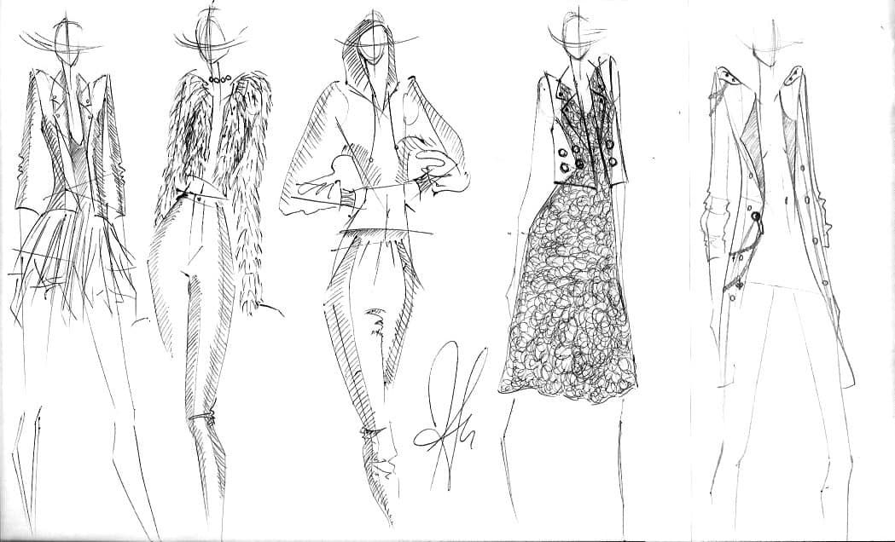

Graphic Design
Graphic design is all around us, especially since most things are now digital. BBYC want's their students to be leaders in the growing market of digital creation.
Music
BBYC University offers state of the art music production studios. We range from classical music to electronic music. We even offer classes in DJing. Music industry is a never dying industry and we need more people going into it.

Painting
Painting offers many different types. Most common is things like impressionism, surrealism, pop art, or expressionism

Fashion Design
Fashion design ranges from jewlery making to making full on outfits. Our professors have been creative directors at many exclusive brands like Louis Vuitton, Gucci, YSL, Givenchy, and many more.
Photography
BBYC has astate of the art black room and computers for editing. You can learn how to develope your own film, learn to edit on things like lightroom or photoshop, or even learn how to set up things like a photoshoot.